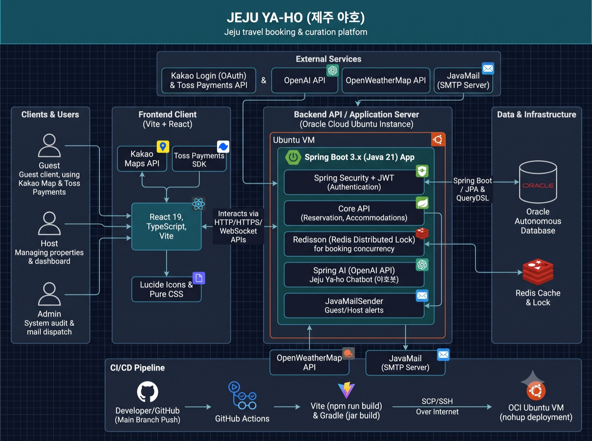
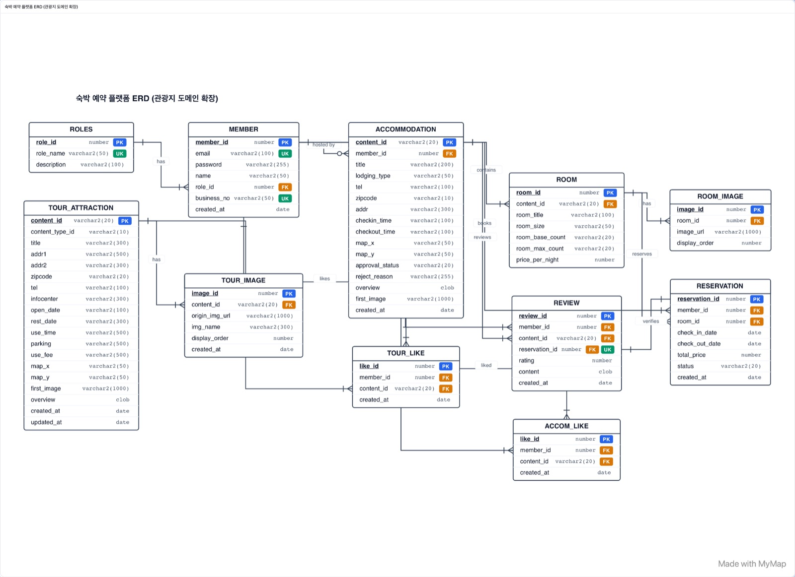

제주 야호
제주 숙소 예약과 결제, 주변 관광 큐레이션을 한곳에서 제공하는 팀 프로젝트
내가 맡은 일
- 호스트·예약 도메인의 핵심 REST API 설계와 구현
- 카카오 OAuth2 로그인, JWT(Access/Refresh) 인증, 이메일 인증 기반 비밀번호 재설정
- Redisson 분산 락으로 객실 예약 동시성 제어
- Redis 캐시로 메인 페이지 조회 성능 개선, 숙소 대량 삭제 쿼리 개선
- 토스페이먼츠 가상결제와 Spring AI 챗봇 연동
- Oracle 스키마(ERD) 설계와 배포 환경 변수 관리
팀이 함께 만든 것
- React 화면과 숙소 검색·필터
- 카카오맵 위치 탐색, 관광지 큐레이션과 날씨
- 리뷰와 위시리스트
- GitHub Actions 배포 파이프라인
- Java 21
- Spring Boot 3
- Spring Security
- JPA
- QueryDSL
- Oracle 19c
- Redis
- Redisson
- Spring AI

